A Journey to Learning Sentiment Analysis
Motivation :
Sentiment Analysis, is receiving a big attention these days, because of its huge spectrum of applications ranging from product review analysis, campaign feedback, competition bench-marking, customer profiles, political trends, etc...
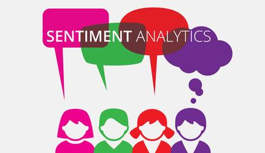
There is a huge flow of information going through the internet and social networks. Online discussions are only relevant to people for a couple of days. Nobody actually goes in past to tweets that are older than maybe a week, for instance. This entire humanity archive of discussion could help in many applications if we train machines to understand the sentiment of people towards a specific theme at a specific time.
Background
“Sentiment analysis is the computational study of people's opinions, sentiments, emotions, and attitudes.” [Excerpt From: Bing Liu. Sentiment Analysis: Mining Opinions, Sentiments, and Emotions.]. This book is an excellent survey of NLP and SA research and was our refererence in this journey.
Given the large amount of data available on the Web, it is now possible to investigate high-level Information Retrieval tasks like user's intentions and feelings about facts or objects discussed. [Pang, B., Lee, L., 2008. Opinion mining and sentiment analysis. Foundations and Trends in Information Retrieval]
Challenge :
In general, there are two main approaches when tackling SA :
Sentiment lexicons using Natural Language Processing (NLP) techniques. A Sentiment lexicon is a list of words that are associated to polarity values (positive or negative). NLP techniques offer a deep level of analysis since they take into account the context words in the sentence.
Machine Learning classification algorithms. Because sentiment classification is a text classification problem, any existing supervised learning method can be directly applied [Bing Liu]. For example, naive Bayes classification , logistic regression, support vector machines (SVM), etc..
In this work we'll work on ML classification and then try to get into the NLP and experience some of the basic techniques used.
Exploratory Data Analysis
The Data
In this work we'll use a data-set that we obtained thankfully from Julian McAuley, at the University of San Diego here.
It is worth mentioning, their excellent work in SIGIR and KDD papers (listed on the above page).
This data-set contains a NJSON formatted product reviews and metadata from Amazon, including 142.8 million reviews spanning May 1996 - July 2014. We have decided to use electronics reviews for this work. Because electronics are not perfect so create a lot of contrasted opinions.
Basic numbers
Let's explore some facts about our data.
The number of unique users are almost 46K for 50K reviews. So each user has done 1 unique review per product.
Using ASIN (Amazon Standard Identification Number) amazon's unique product identifier we find around 3446 products
Let's look at at the the number of ratings per product :
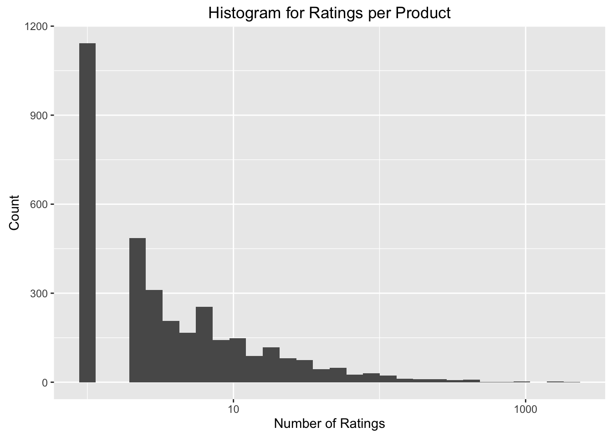
It's quite skewed with some extreme best sellers (a headphone from Koss) having 3000 reviews.
Understand the rating system in Amazon
The rating system used in Amazon is as follows :
- emotional positive (5 stars)
- rational positive (4 stars)
- neutral (3 stars)
- rational negative (2 stars)
- emotional negative (1 star )
The user's star rating is an objective human interpretation of of his own review description. So, we consider that as the ground truth.
Let's see the distribution of these ratings in our case
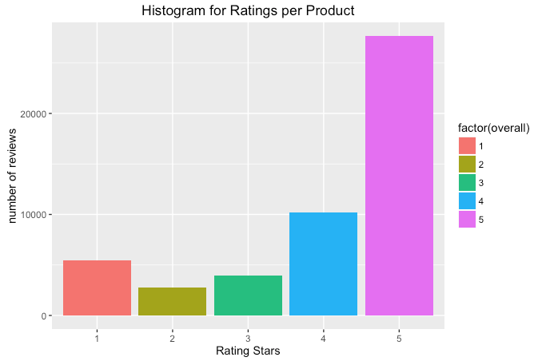
The ratings are very skewed towards positive feedback. Which is an indication that Amazon is not selling junk at least but it's not going to help in our modeling. We have to have equal likelihood of each class of the ratings.
Design decisions on reviews
In this work we will have a binary classification. Either Positive or Negative. We objectively chose to demarcate each rating at the 2.x level divide, such that star ratings above this level would be marked as “1” and star ratings below this level would be marked as “0”
We will collapse the 3, 4 and 5 stars ratings into “1” value, and the 1 and 2 stars ratings into Negative “0”
So at the end we'll have only 2 opinions : negative/positive
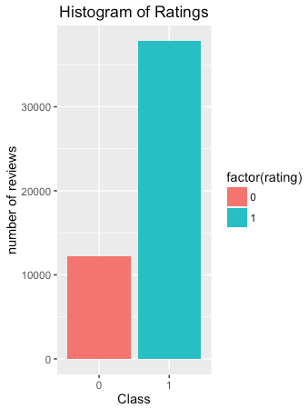
PART I : Machine Learning Classification
Bag of Words
One of the simplest things to do is to treat each text as a "bag of words". We have used the tm package in order to construct a Term Document Matrix but our machine couldn't handle such huge number of dimensions. So let's go simpler with tidytext. I fact we found that R as a framework is not as rich as Python Scikit in NLP.
Feature Extraction from Bag of Words
Use nrc lexicon as a bag of words in order to remove stem words. This dataset has sentiments but we're not going to use them for the time being.
Let's discover the top words for both positive and negative ratings.
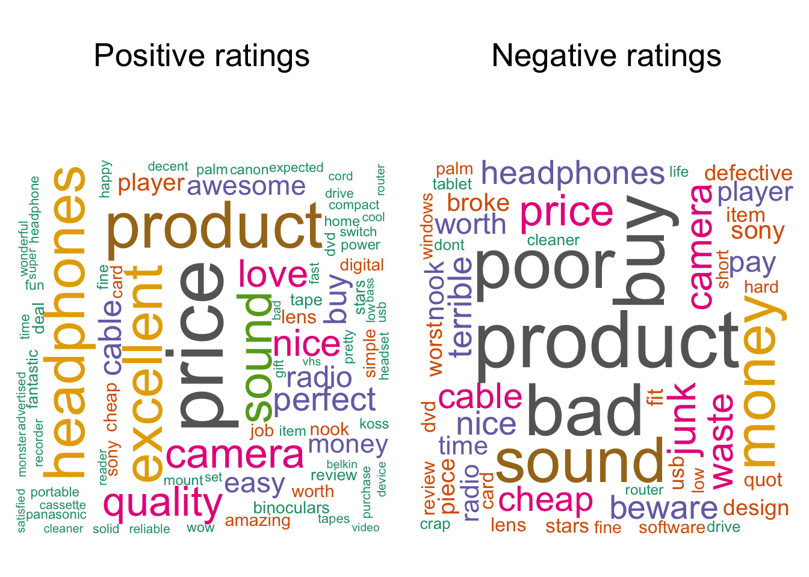
TF-IDF
Term Frequency - Inverse Document Frequency is term count within a document weighted against the term's ubiquity within the corpus. This weight is based on the principle that terms occurring in almost every document are therefore less specific to an individual document and should be scaled down. So a tf-idf value represents the term's relative importance within a document.
Reduce dimensionality (Single Value Decomposition)
Suppose we have m words (features) and n documents, Single value decomposition (SVD) of a tall rectangular m*n matrix is a factorization to orthogonal eigenvectors and eigenvalues. It's basically a PCA but without mean shifting.
SVD works better in SA because it is able to detect and extract small signals from noisy data. Noisy data here means words that are not significant for prediction.
In this context, it is known as latent semantic analysis (LSA).
The diagonal vector generated is ordered by importance of each dimension. Let's graph a cumulative variance:
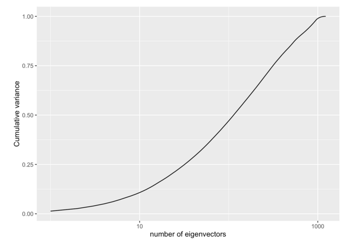
Design decision
We have to decide how many dimensions to keep. Looking at the graph we can keep 10% dimensions which represent almost 99% of the features. This is curious and a puzzling choice to make. But let's aim for fast processing and later on see if adding more dimensions improves our prediction.
Supervised training
As with any ML problem, we randomly split the data into training and test data. We chose to have 80% for training and 20% for testing. Below is the list of algorithms we used :
Naive Bayes, making the assumption that the probability of each word occurring for a given class is independent.
Support Vector Machine , SVMs were developed by Cortes & Vapnik (1995) [1] for binary classification. Their approach may be roughly sketched as follows:
Class separation: basically, we are looking for the optimal separating hyperplane between the two classes by maximizing the margin between the classes’ closest points —the points lying on the boundaries are called support vectors, and the middle of the margin is our optimal separating hyperplane;
Logistic regression
Random Forest where prediction function works similarly to decision trees
Conclusion
In this section we used a supervised machine learning approach and tried several classification models. From the table below, the algorithmic approach using randomForest gives the best accuracy. we are 25% better than flipping a coin with only a classified bag of words.
| Method | Accuracy |
|---|---|
| Naive Bayes | 0.6670996 |
| Support Vector Machine | 0.7367965 |
| Linear Discriminant Analysis | 0.7441558 |
| Random Forest | 0.7584416 |
PART II : Sentiment lexicons using Natural Language Processing
Background
In the machine learning classification models based on words we've seen that many false positives originate from negations. such as "not good", "don't recommend", etc..
In our work, we'll use the openNLP package. Which is an API for the apache OpenNLP framework written in Java. openNLP requires a pre-made models. These are conveniently available to R by installing the respective openNLPmodels.language package from the repository at http://datacube.wu.ac.at
Process
The following flowchart depicts the proposed process for categorization using NLP
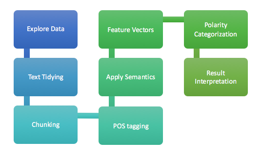
Data review
As with any text, we must do a series of transformations :
- lowercase
- remove punctuation
- strip white space
No-brainer classification using lexicons
Let's do a basic sentiment analysis from a categorized bag of words, we'll use the Bing lexicon provided by tidytext package :
Classification
The score is obtained from simply
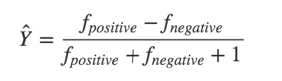
In the following figure we notice that the red and blue spaces (of +/- classes) are perfectly overlapping which explains why applying a scoring gets an accuracy as low as 67%
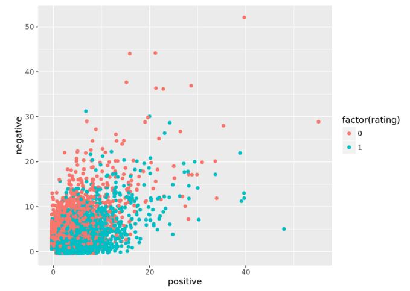
Evaluation of the results
To find out what we can enhance, let's visualize the word distribution :
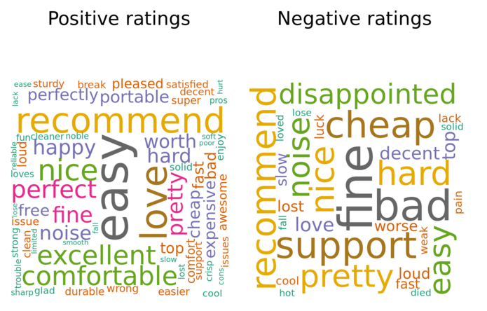
Many positive words like "recommend" are found in negative ratings as well. This is due to the negations and polarity inverter adjectives. For example : Not bad, would account for negative just because of the word "bad" is there.
In the next section, we'll try to use NLP to enhance our classification.
A more sophisticated Classification
In the following, we'll experiment with a 1-star rated wireless charger from Amazon. This particular review would count for a positive prediction using models that do not take into account the semantics:
"Bought it in Black Friday sales for good price.I don't like it.not wanna recommend to anybody"
Sentence chunking and Part-of-Speech tagging
The first step is to extract 2 types of phrases :
- Verbal phrases that may imply opinions. Example : "I didn't like the design"
- Noun phrases that may describe the product. Example : The design was not good""
The part-of-speech tags meaning is found in the Penn Treebank Project
Treebank of Sentence and POS tagging
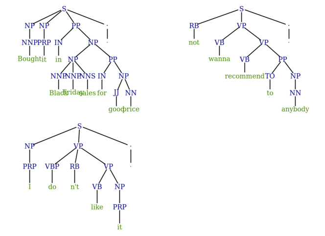
Feature identification
For the purpose of this work we won't go for a full analysis using penn treebanks. Rather we'll simply identify the following words inside a verbal and noun chunks (phrase):
- [VB] : verb w/ positive/negative sentiment : like, hate , etc
- [JJ] : adjective w/ positive/negative sentiment : bad, junk
- [RB] : adverb polarity inverter such as : n't, or incr/decrementers such as : too, very, more etc.
Scoring algorithm
The idea is to find RB multiplier and look for a VB or JJ surrounding it : For example : n't like : will compute 1 x -1
We should be able to calculate our sentiment score as the diff between negative and positive counts normalized by the count just like we did before.
Interpretation
Just as before we can plot these 2 positive and negative dimensions :
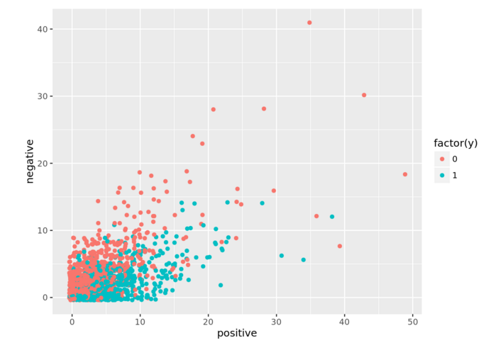
Notice how the discriminance of the 2 clusters is higher.
Conclusion
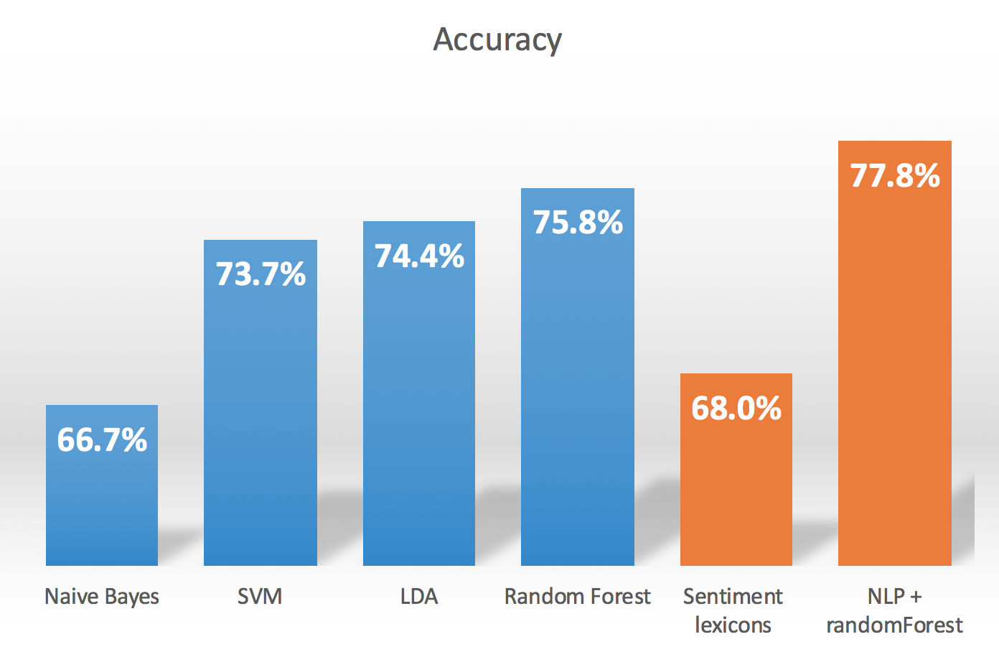
Some of the basic techniques of NLP can enhance the accuracy of sentiment scoring. We went from 68% to 74% with a simple identification of negation-of-adjective (NOA) and negation-of-verb (NOV). And using a randomForest algorithm we achieved nearly 78% accuracy.
But, some language forms require a deep analysis. For example :
Sarcasm : "Great sound when working" Deep inverter : "Not such a good value after all", polarity inverter adverb is 3-words faraway from its adjective.